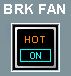

Landing Gear Panel
Brake Fan Switch
HOT - The HOT light illuminates amber to indicate that the brake temperature is above the maximum brake temperature (300°C) for takeoff. An ECAM caution message also appears.
Maintenance action is required when:
- The difference between the average temperature of the left gear brakes and the average temperature of the right gear brakes is 200°C or more.
- The temperature difference between two brakes on the same gear is greater than 150°C and the temperature of one of those brakes is at or above 600°C or at or below 60°C after landing.
- Any brake’s temperature exceeds 900°C
OFF - When the brake fan switch is selected to OFF (no lights are illuminated), then; the brake fans stop.